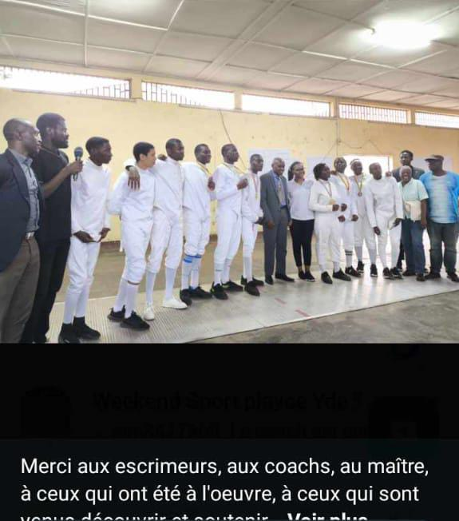
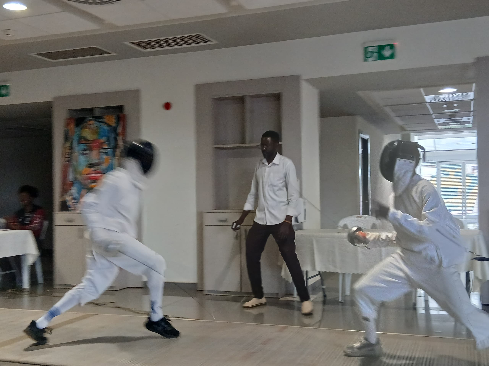
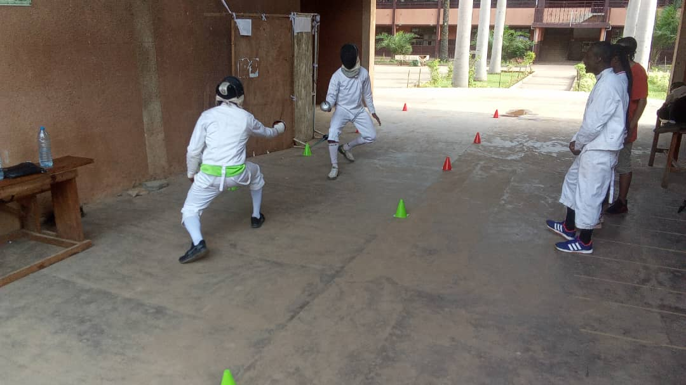
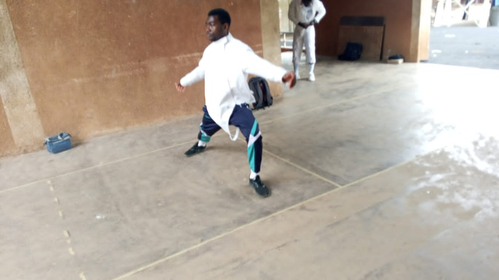

Galerie photos
Quelques images de Bell A Nkonen Jonathan et de sa pratique de l’escrime. Sélectionne une photo pour l’ouvrir en grand.




Quelques images de Bell A Nkonen Jonathan et de sa pratique de l’escrime. Sélectionne une photo pour l’ouvrir en grand.



